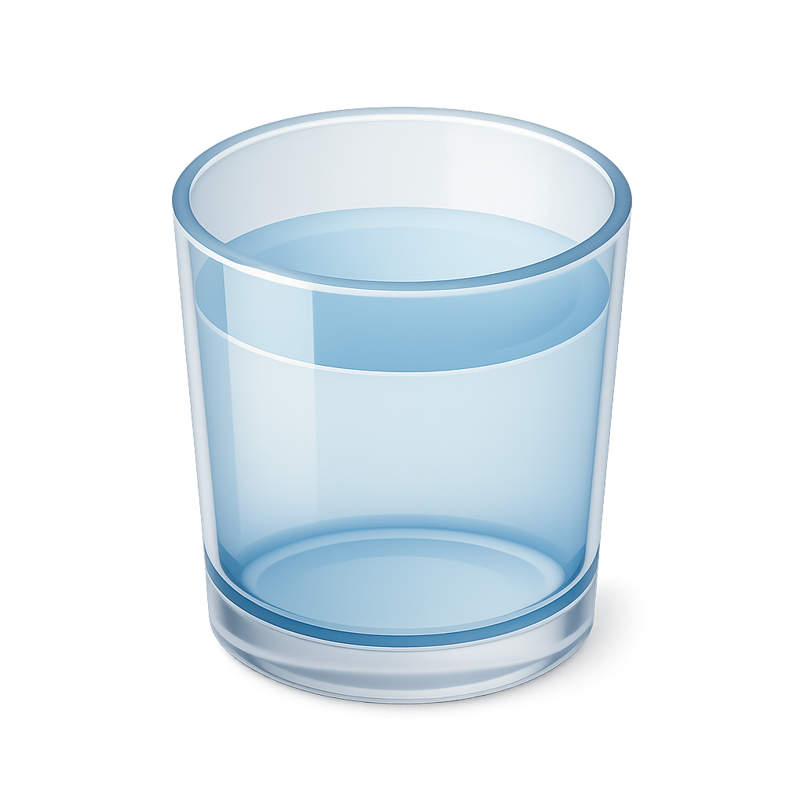
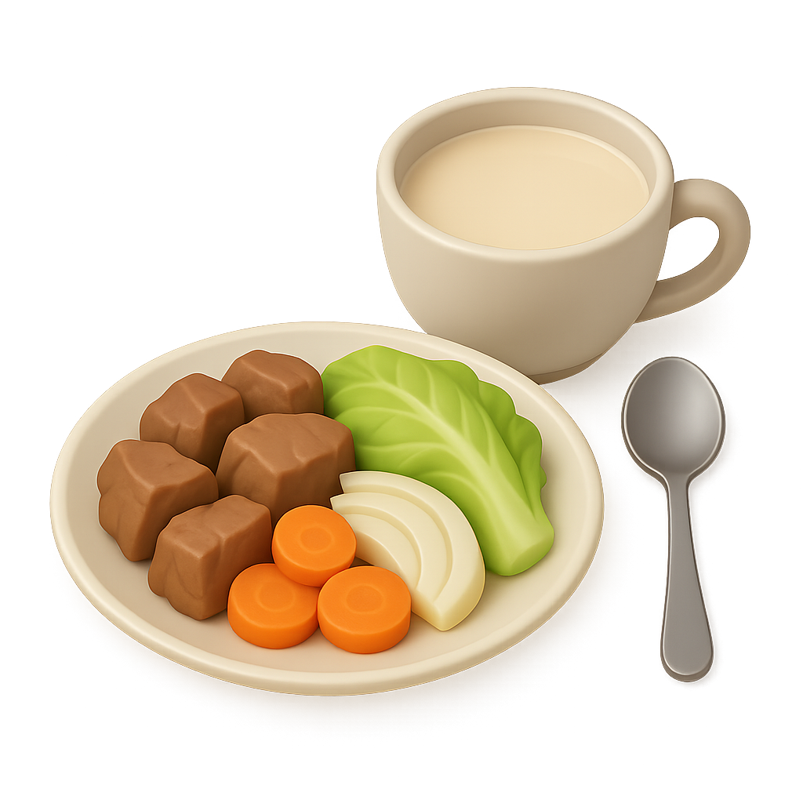

Good morning
Here's where today stands.

2.5L Water
Daily goal
0%
Calories
0
of 0 kcal
0%
Protein
0g
of 0g target
0%
Carbs
0g
of 0g target
0%
Fat
0g
of 0g target
Today's meals
Ready for the next one?
Snap a photo of your plate, NutriScan reads the ingredients and logs the macros for you.

Suggested for you
Loading suggestions…
Body stats
cm
kg
BMI
Underweight
Normal
Overweight
Obese
Normal weight
Take a look at your complete macro and food distribution history logs to balance out your week perfectly.
View Food Distribution Dashboard →